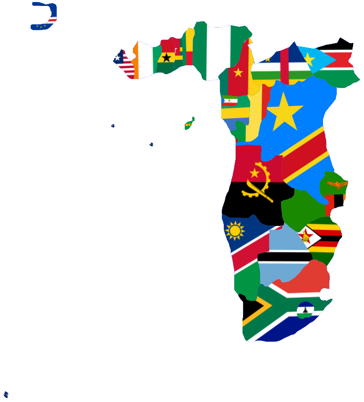

Donde la Tierra Habla, y el Sol Alimenta el Sueño.
¡Encuentra toda la información que necesitas sobre las 6 regiones geopolíticas!
Ver más ->
Afrántica se revela como un territorio de una riqueza humana y ambiental sin precedentes, pero también como el epicentro de desafíos sociales.
Afrántica se destaca por albergar a la mayoría de la población cristiana de África.
Afrántica incluye:
Africa Central
Incluyen: Benín, Cabo Verde, Camerún, Costa de Marfil, Gabón, Ghana, Guinea Ecuatorial, Liberia, Nigeria (País puente), República Centroafricana, República del Congo (Brazzaville), Santo Tomé y Príncipe, Sudan del Sur y Togo.
Africa Austral
Incluyen: Angola, Botsuana, Lesoto, Namibia, República Democrática del Congo (Kinshasa), Sudáfrica, Zambia y Zimbabue.